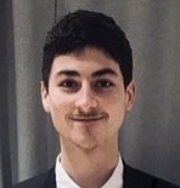

Hello, Je suis Victor 😎

Assistant chef de produit internet chez Bouygues Telecom - Alternance en Marketing Digital et Data chez KEDGE Business School 📚🌐
"Passionné de Marketing Digital, j'aime utiliser les nouveaux outils technologiques pour relever de nouveaux challenges"
Mes Expériences Professionnelles 🚀
Assistant chef de Produit Internet - Bouygues Telecom
Janvier 2019 - Aujourd'hui
Meudon-la-Foret, ile de France, France
Assistant chef de Produit OPEN et Livebox - Orange
Semptembre 2019 - Juillet 2019
Paris, ile de France, France
Stagiaire Chargé de Communication - Saint Roch Habitat
Juin 2017 - Juillet 2017
Lille, France
Mes Formations 📚
KEDGE Business School - MS en Marketing Digital et Data
Septembre 2019 - Aujourd'hui
Paris, France
EDHEC Business School - Bachelor of Business Administration
2015 - 2019
Lille, France
Universidad de Valladolid - Marketing et Investigation de marché
2017 - 2018
Valladolid, Espagne
Notre Dame de la Tilloye - Baccalauréat ES : Mention Bien
2015 - 2019
Compiègne, France
Association et Bénévolat 🤝
Créateur et Vice-Président - EDHEC 2.0
octobre 2015 - Juin 2017
Lille, France
Créateur et Vice-Président - SOLIDHEC
octobre 2015 - Juin 2016
Lille, France
Mes Compétences 👨💻
Langues
Anglais : Bon niveau
Espagnol : Langage courant
Outils informatiques
Pack office
Codage HTML et CSS (formation le Wagon)
Photoshop
Montage vidéo
Mes Passions 🏀
Basketball
Scoutisme
Nouvelles technologies
Jeux vidéos